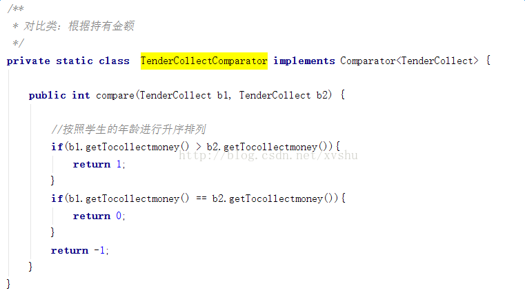
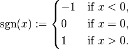

背景
有部分业务需要进行排序，对比的对象是某实体里的金额（double 类型），这样，我们实现了自定义的比较类，结果运行一段时间之后报了错误：Comparison method violates its general contract! ，经过校验，发现错误出现在自定义排序上，经网上各种查阅资料发现是jdk7的兼容问题，以下将解决过程分享给大家。
错误截图：
重写的比较方法：

解决方案
先说如何解决，解决方式有两种。
修改代码
上面代码写的本身就有问题，第4行没有考虑o1 == o2的情况，再者说我们不需要自己去比较，修改为如下代码即可：
/**
* 对比类：根据持有金额
*/
private static class TenderCollectComparator implements Comparator<TenderCollect> {
public int compare(TenderCollect b1, TenderCollect b2) {
return b1.getTocollectmoney().compareTo(b2.getTocollectmoney());
}
}不修改代码
那么问题来了。为什么上面代码在JDK6中运行无问题，而在JDK7中却会抛异常呢？这是因为JDK7底层的排序算法换了，如果要继续使用JDK6的排序算法，可以在JVM的启动参数中加入如下参数：
- -Djava.util.Arrays.useLegacyMergeSort=true
分析
在我以前的认知中，高版本的JDK是可以兼容之前的代码的，与同事讨论了一番另加搜索了一番，事实证明，JDK6到JDK7确实存在兼容问题（不兼容列表）。在不兼容列表中我们可以找到关于Collections.sort的不兼容说明，如下：
- Area: API: Utilities
- Synopsis: Updated sort behavior for Arrays and Collections may throw an IllegalArgumentException
- Description: The sorting algorithm used by java.util.Arrays.sort and (indirectly) by java.util.Collections.sort has been replaced.
- The new sort implementation may throw an IllegalArgumentException if it detects a Comparable that violates the Comparable contract.
- The previous implementation silently ignored such a situation.
- If the previous behavior is desired, you can use the new system property, java.util.Arrays.useLegacyMergeSort,
- to restore previous mergesort behavior.
- Nature of Incompatibility: behavioral
- RFE: 6804124

- sgn(compare(x, y)) == -sgn(compare(y, x))
- ((compare(x, y)>0) && (compare(y, z)>0)) implies compare(x, z)>0
- compare(x, y)==0 implies that sgn(compare(x, z))==sgn(compare(y, z)) for all z
再回过头来看我们开篇有问题的实现：当x == y时，sgn(compare(x, y)) = -1，-sgn(compare(y, x)) = 1，这违背了sgn(compare(x, y)) == -sgn(compare(y, x))约束，所以在JDK7中抛出了本文标题的异常。
- return x > y ? 1 : -1;
结论
那么现在是否可以盖棺定论了，按照上面的分析来看，使用这种比较方式（return x > y ? 1 : -1;），只要集合或数组中有相同的元素，就会抛出本文标题的异常。实则不然，什么情况下抛出异常，还取决于JDK7底层排序算法的实现，也就是大名鼎鼎的TimSort。后面文章会分析TimSort。本文给出一个会引发该异常的Case，以便有心人共同研究，如下：
- Integer[] array =
- {0, 0, 0, 0, 0, 0, 0, 3, 0, 0, 0, 0, 0, 0, 0, 0, 0, 0, 0, 0, 0, 0, 0, 0, 0, 0, 0, 0, 0, 0,